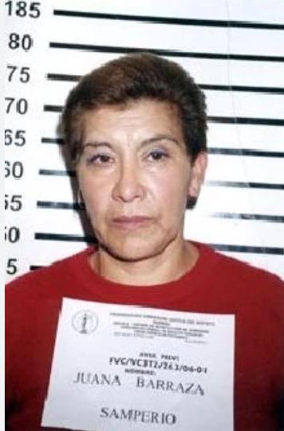

El Monstruo de Toluca
Los hechos clave que llevaron a este apodo incluyen:
**Múltiples Víctimas:** Fue responsable de varios asesinatos. En el patio de su casa, ubicada en la colonia Villas Santín de Toluca, se encontraron los cuerpos de al menos tres mujeres: Jessica Guadalupe Jaramillo Orihuela, Adriana González Hernández y Martha Patricia Nava Sotelo.
**Modus Operandi y Ubicación:** Enterraba los cuerpos de sus víctimas en el mismo lugar donde vivía, lo que generó gran conmoción en la comunidad.
**Condenas Acumuladas:** Ha recibido múltiples sentencias que suman más de 335 años de prisión por los delitos de feminicidio, homicidio, violación, privación ilegal de la libertad e inhumación ilegal de restos humanos.
**Víctimas:** Adriana, Patty, Jessica
Caso de Mónica Caso de Patricia Caso de Jessica
Biografía del CulpableEl Monstruo de Atizapán
**CRÍMENES:** Mendoza mató, descuartizó, y presuntamente se comió partes de sus víctimas a lo largo de más de 30 años. Engañaba a mujeres, principalmente jóvenes y de bajos recursos, para llevarlas a su casa, donde las asesinaba, desmembraba y enterraba sus restos en el sótano.

**Evidencia Encontrada:** Durante los cateos, las autoridades descubrieron un escenario macabro. Se encontraron miles de fragmentos óseos (más de 4,000) que podrían corresponder a un gran número de víctimas, además de objetos personales, ropa e identificaciones de las mujeres.
El Caníbal de la Guerrero
**Arresto y Descubrimiento:** José Luis Calva fue detenido en 2007. Las autoridades allanaron su departamento y encontraron restos humanos cocinados y almacenados, además de un altar con símbolos satánicos. Se le vinculó con el asesinato y descuartizamiento de al menos tres personas.
**Muerte en Prisión:** El caso no llegó a juicio. José Luis Calva Zepeda fue encontrado ahorcado en su celda del Reclusorio Oriente el 11 de diciembre de 2007, apenas unas semanas después de su detención.

¿Por qué lo hizo? ¿Su Ayudante?
La Mataviejitas
La Mataviejitas (Juana Barraza Samperio) es la primera asesina serial en la historia mexicana. Sus víctimas eran personas de la tercera edad, a las que ofrecía ayuda como una manera de acercarse a ellas sin que sospecharan nada.
**Método Operandi:** Se hacía pasar por enfermera o trabajadora social para ganarse la confianza de sus víctimas. Una vez dentro, las ahorcaba o las atacaba con objetos punzocortantes, robando después algunos objetos de valor.
**Captura:** Fue detenida en 2006 a los 48 años. Lo más sorprendente fue descubrir que el asesino serial era en realidad una mujer. Fue acusada de al menos 17 asesinatos.